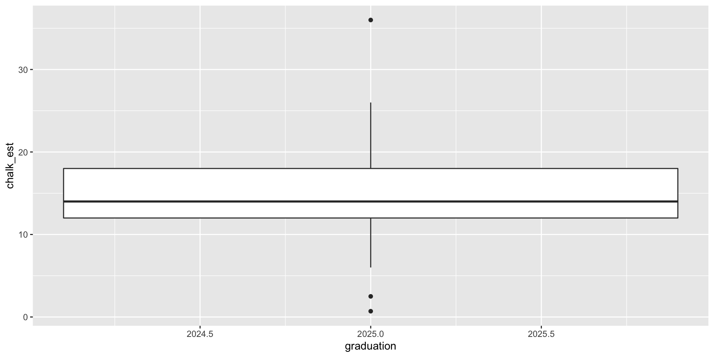

Assess the model: Is the model adequate? Could it be simpler? Are assumptions met?
Use: Answer the question of interest
4 Step Process
Choose the model: What type of model?
We design the experiment and collect the data to match the model.
Fit the model to the data
Assess the model: Is the model adequate? Could it be simpler? Are assumptions met?
Use: Answer the question of interest
Our First Experiment
Our First Experiment
What were all of the possibilities? How do you think that was determined?
Which conditions were distributed across people, and which within people?
What do you think are the possible research questions answered by this study?
What made this study an “Experiment”?
Can you assign experimental material to conditions?
You have created those conditions
If the material already comes in different “varieties”, then it’s an observational study
People with different psychiatric illnesses
Different species of plants
Sometimes one study will have both experimental and observational explanatory variables.
Defining Terms
Balanced Designs: all conditions (or treatments) have the same number of observations.
Unbalanced design do not.
Experimental Units: the element that gets randomized to conditions. We record one score on our response variable per unit.
Factors and Levels: The factor is the entire explanatory variable. Also called an independent variable. A factor’s levels are the individual conditions (or treatments).
Response: The outcome variable. Also called dependent variable. We want to see if our factors have an effect on our response variable.
Confounding Variables
I want to test if smelling a sweet food (fresh cinnamon rolls) versus a non-sweet food (broccoli) has an effect on salivation in humans. So, I recruit some participants to come to my lab, I’ll have to bake the cinnamon rolls and run that condition all at once, so I decide that I will bake my rolls at 9a, then from 10a-12p I will run the cinnamon roll condition. I bring people into individual distraction free rooms, hook them up to the salivation sensor, then bring them a plate with a freshly baked cinnamon roll. I record their salivation. Then, I will run the broccoli condition from 1p-3p, using the exact same measurement procedure.
Are there any issues with my study?
Confounding Variables
Confounding variables vary systematically with the levels of the explanatory factor
Bias
Our data will be “off” in a systematic, non-random, way
Sampling Bias: Biologist is using a net with large holes to capture a sample of fish from a lake.
Selection Bias: Assigning the skinnier rats to the good lab chow.
One-Way ANOVA
One factor (explanatory variable) with any number of levels.
qplot(x =as.factor(graduation), y = chalk_est, data = survey)
Data Cleaning
survey <- survey %>%filter(chalk_est <100)
One-Way ANOVA
qplot(x = graduation, y = chalk_est, data = survey, geom ="boxplot")

One-Way ANOVA
qplot(x =factor(graduation), y = chalk_est, data = survey, geom ="boxplot")
The Meats
One-Way Design
The shelf life of meats is the time a prepackaged cut remains salable, safe, and nutritious. Recent studies suggested controlled gas atmospheres as possible alternatives to existing packaging. To test this, beef steaks (75\(g\)) were randomly assigned to packaging with either 1) ambient air in a commercial plastic wrap, 2) vacuum packed, 3) 100% carbon dioxide (\(CO_2\)), or 4) a mixture of 1% carbon monoxide (CO), 40% oxygen (\(O_2\)), and 59% nitrogen (N). The number of psychrotrophic bacteria on the meat was measured after nine days of storage at 4 degrees C.
Gender Bias in STEM
One-Way Design
In a randomized double-blind study (n = 127), science faculty from research-intensive universities rated the application materials of a student who was randomly assigned either a male or female name for a laboratory manager position. Faculty participants rated the male applicant as significantly more hireable than the (identical) female applicant. See materials here
Acid Rain
One-Way Design
“Clean” precipitation has a pH in the 5.0 to 5.5 range, but observed precipitation pH in northern New Hampshire is often in the 3.0 to 4.0 range. Is this acid rain hurting trees? 240 six-week-old yellow birch seedlings were randomly assigned to one of 5 groups. Each group received an acid rain mist at the following pH levels: 4.7, 4.0, 3.3, 3.0, and 2.3. After 17 weeks, the seedling were weighed, and their total plant (dry) weight was recorded.
Leafhopper survival
One-Way Design
It is reasonable to assume that the structure of a sugar molecule has something to do with its food value. An experiment was conducted to compare the effects of four sugar diets on the survival of leafhoppers. The four diets were glucose and fructose (6-carbon atoms), sucrose (12-carbon), and a control (2% agar). The experimenter prepared two dishes with each diet, divided the leafhoppers into eight groups of equal size, and then randomly assigned them to dishes. Then she counted the number of days until half the insects had died in each group.